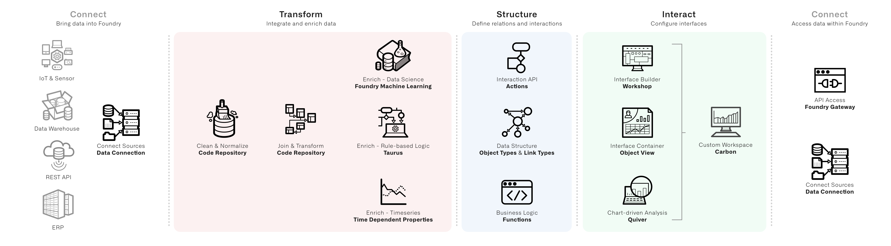

Defining functional requirements allows us the raw material to distill the components that we need to implement in our use case. This helps us understand what we will need to deliver to meet those requirements and gives us smaller pieces to carry forward into evaluating implementation options.
The next step of the solution design process is taking our functional requirements and mapping them to the components that can be implemented in Foundry and then weighing options for their configuration. This step may look different across use cases, though the following components are broadly useful:
We can extract these components from our functional requirements. For example:
A route operations analyst (user type) reviews an alert inbox (interface) for their responsible routes and triages alerts (decision) based on priority, flight and route details, and organizational impact (decision inputs) to re-assign, resolve, or escalate (action) each alert.
Alert object type.Repeating this process for the other functional requirements results in the following components:
This diagram represents an object model that contains the concepts embedded in our functional requirements. The circles represent object types, and the lines between them are link types. Depending on the level of details, consider identifying the primary key property for each object type and the cardinality (1:1, 1:N, or N:N) for each link type.
The colors help identify which object types are core to their Ontology - they map directly to a granularity of data coming from a source of truth - and which are derived and need to be created as an enrichment. Colors also identify use case object types that are actively edited through the operational workflows in the use case.
In our example, tracing back to our source system, we can identify systems of record for data about Flights, Aircraft, Airlines, and Airports. Our pipelines can then produce a core ontology that reflects those concepts.
However, we do not have a source system with data about "routes". In our transform segment, we will derive a dataset with one row per route to reflect the concept of Routes in our ontology.
For the operational aspect of our use case, we need a data model that reflects our organization - hence the Team and Employee object types. We also need standard building block object types like a âticketâ object type for the alerts and related object types to capture comments and uploaded files.

This simplified diagram tracks the possible states for an alert ticket object and the actions that transition it between states. As the use case progresses, tracking can be refined further to include the metadata captured in each action as well as the validations that define when a given action is available and which users can perform it.
Through the functional requirements and the object modeling exercise, we can identify object level and property level enrichments. Object level enrichments are new, derived concepts that are not inherently reflected in our source data. These can match to external concepts, like our Route object type, or they can be an operational or use case specific concept like an Alert Ticket.
Property-level enrichments enhance existing object types with new data by applying organizational rules, aggregating lower granularity data, or running models. In our example, we will need to reflect a priority for each alert ticket and an estimation of the organizational impact.
Across our functional requirements, we can identify the different intents and corresponding interaction expectations that users will have. Identifying intents and expectations produces a list of actual implementations and corresponding tools.
In our example, we have the following:
assigned and under investigation alerts while easily moving into ad hoc data exploration and analysis and writing up the narrative of the investigation. The intent is to analyze and document.
Having catalogued the components of the use case, the next decision is to implement each piece. The diagram above can help match the default option for common components.
For instance, the interface expectations from above break down like this:
A stand-alone inbox application is a Workshop project. Since many of the interactions are about a single ticket, the Object View for a given ticket should present a unified view of both relevant decision-making context and easy access to appropriate actions. An executive dashboard might start as a Quiver template. As the review and oversight process is refined, the template may evolve into another Workshop module and an additional set of use case object types to track and approve on a periodic basis. In most cases, a Carbon workspace brings together the subset of relevant object types for search and exploration alongside the custom interfaces into a polished, unified, and accessible experience across all potential user types.
There are more details on the considerations within these options in the Pipeline, Ontology, and App Building documentation. The following will focus on areas where implementation decisions bridge across these sections.
The foremost example is where to implement the identified enrichments.
Consider the example of our Route object type enrichment and a set of metrics we might want to know about each route: the average flight time, the count of arrival delays longer than 30 minutes, and a measure of the variability in flight time.
One approach is to derive these within our applications. For instance, we can make a pivot table of our Flights object type grouped by the origin and destination airports and calculate an average flight time. If we first filtered to a set of flights with delays longer than 30 minutes, we could similarly plot a pivot table to show the routes with a count of delayed flights.
This approach has a number of drawbacks. Since the metrics are computed inside a specific interface, they cannot be re-used. They also need to evaluate when the page loads, which can lead to relatively slower performance. And since metrics are ephemeral, they cannot be used as part of further filtering or analysis. The benefit of this approach is since the calculations happen dynamically, they will update instantly to reflect any changes that result from new or updated values from Actions.
An oversimplified heuristic might be: If the enrichment does not rely on data that can be changed by a user through an Action, create the enrichment in the data layer.